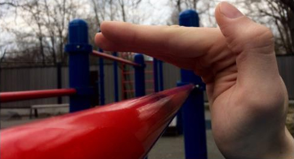
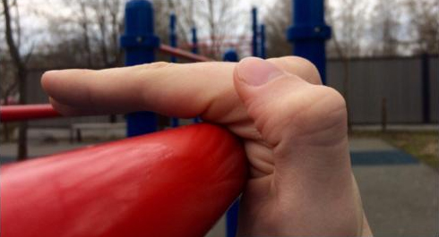
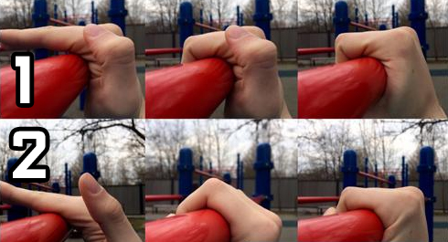
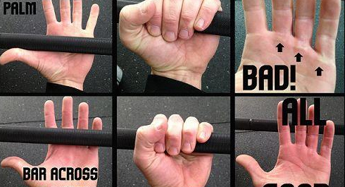

В процессе тренировок на турниках и брусьях абсолютно у всех рано или поздно появляются мозоли. Это неизбежно. Но, к сожалению, далеко не все знают, что с ними нужно обращаться бережно, и поэтому они могут доставлять много неприятностей. Давай поговорим сегодня о том, как избежать их появления, и что делать, если они все-таки появились.
Причины появления мозолей
Для начала давай разберёмся с тем, почему появляются мозоли. Первая и наиболее очевидная причина - это трение ладони о перекладину, которое возникает при выполнении упражнений, в которых рука перемещается относительно неё, например, выходов силой на две или различных перепрыгиваний. Но вряд ли среди участников программы найдутся те, кто ежедневно выполняет подобные упражнения. А вот мозоли от тренировок появляются, наверное, у абсолютного большинства. Почему же?Здесь появляется вторая – менее очевидная, но гораздо более важная причина – давление на крайние участки кожи. Обычно мозоли образуются в одних и тех же местах, хотя мы держится за перекладину всей ладонью. Здесь и кроется ключ к разгадке причины появления мозолей - они появляются там, где сдавливаются складки кожи. Для того, чтобы лучше понять этот момент, обратимся к картинке.


Четыре совета для победы над мозолями
1. Хват. Мозоли возникают из-за сдавливания складок кожи. Значит, чтобы бороться с образованием мозолей, нам нужно стараться избегать использования такого хвата, при котором на складки на сгибе ладони будет оказываться давление. Реализовать это можно двумя способами.
Первый способ - просто внимательнее относиться к тому, как ты берешься за перекладину. Обращай внимание на то, чтобы складки кожи не оказывались под пальцами, и уже благодаря этому моменту удастся сильно сократить негативное воздействие на кожу. Для наглядности вот картинка, на которой видно разницу между двумя способами хвата.

В первом случае мы кладем ладонь сверху на перекладину и либо просто закрываем, либо прокручиваем на себя - при таком варианте складки кожи оказываются под пальцами, и на них оказывается большое давление при висе. А во втором варианте мы наоборот вначале кладем на перекладину пальцы, а потом прокручиваем ладонь от себя - такой вариант в большинстве случаев позволяет снизить негативное воздействие на участки кожи.
Второй способ - вообще не браться за перекладину ладонью, а схватиться только пальцами. Такой вариант немного сложнее, потому что мышцы предплечий при таком хвате будут уставать быстрее. Но он позволяет полностью убрать нагрузку с кожи самой ладони, что может быть актуально, если ты, например, сорвешь мозоль. Стоит отметить, что нужно также внимательно относиться к тому, как мы кладем на перекладину пальцы, в противном случае на них тоже могут появляться небольшие мозоли. Вот картинка для наглядной демонстрации разницы между двумя видами хвата.

2. Толщина перекладины. Если мы хотим снизить нагрузку на кожу, то есть две причины использовать более толстые перекладины.
Первая причина - когда мы обхватываем толстую перекладину, наша ладонь сгибается меньше, чем при обхвате тонкой, а это значит, что на коже не будет таких больших складок, следовательно мозоли будут появляться не так быстро (а если перекладина достаточно толстая, то и вовсе не будут).
Вторая причина - площадь контакта руки с перекладиной будет тем больше, чем толще перекладина. И как мы знаем из школьного курса физики, чем больше площадь поверхности, на которую действует сила, тем меньше давление, оказываемое на неё. Значит, при использовании толстой перекладины снизится давление на кожу рук. А вот что не снизится, так это нагрузка на мышцы предплечий - чем толще перекладина, тем сложнее будет себя на ней удержать.
Если поблизости нет толстых перекладин, то можно увеличить площадь контакта со стандартной перекладиной, обмотав её полотенцем, или использовав расширители грифа.
3. Перчатки для подтягиваний. Простейший способ уберечь руки от мозолей - использовать перчатки. Хорошие перчатки не только полностью защищают кожу от трения, но снимают часть нагрузки от сдавливания кожи, так как облегают её дополнительным слоем. Выбор перчаток будет зависеть от типа выполняемых упражнений:
1. В упражнении есть момент проворачивания кисти на турнике.
2. В упражнении нет такого момента.

В первом случае, например при тренировке выходов силой на перекладине, нужны перчатки с нейтральным или низким коэффициентом сцепления с поверхностью. Их главная задача - защищать ладони от возникновения мозолей. Для этой цели отлично подходят перчатки с ладонью из замши WORKOUT F1. Внутри перчаток также есть мягкие подкладки на ладони и у основания и первой фаланги пальцев.
Во втором случае, например при тренировке статических элементов или отработке подтягиваний или отжиманий на брусьях на максимальное количество повторений, нужны перчатки, усиливающие сцепление с перекладиной. В них легче держаться, потому что руки не проворачиваются. Для этой цели подходят перчатки с ладонью из кожи WORKOUT F2 или резины WORKOUT F3. Экстремальным вариантом перчаток такого типа являются атлетические накладки GRIPAD, которые не только намертво фиксируют руку на турнике, но ещё и имеют несколько сантиметров защитной поверхности, полностью спасающих руку от мозолей.
4. Крем для рук. После тренировки воспользуйся лосьоном или кремом для рук, чтобы смягчить и увлажнить кожу на ладонях. Сухая кожа мешает нормально тренироваться, потому что часто трескается, ломается и рвется.
Главная мысль, которую мы хотим донести заключается в том, что хотя мозоли и неизбежны, это не значит, что от них нужно страдать.